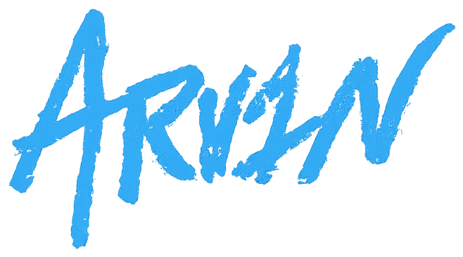
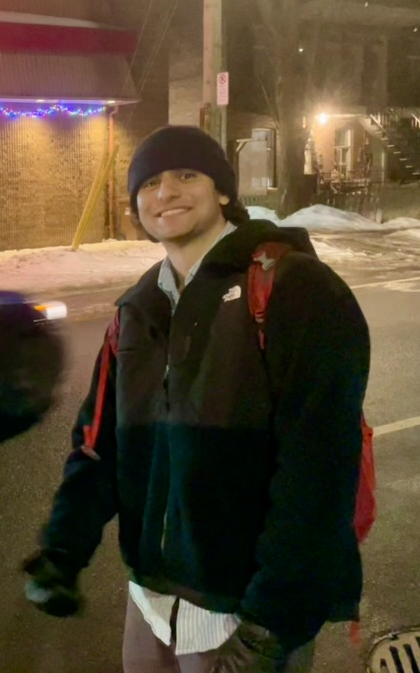

Arvin Hedayat
From spatial data to working, deployed models
I take messy, real-world data and turn it into tools people use to make decisions. End to end: ingestion, bias correction, modeling, validation, and interactive tools.
I'm a fourth-year Statistics student at McGill, with minors in Economics and Urban Studies, originally from the greater Boston area. Recent work includes an autonomous-vehicle pickup and drop-off index for New York City and a public-health pipeline tracking Lone Star tick range expansion, both deployed and self-updating.
Each of these started from a conversation rather than a dataset — a researcher, an investor, a friend, someone living the problem. I tend to find the work by listening for it, then building.
The shape of the work stays the same across domains: a messy dataset, a real situation, and a working product at the end. The domain changes, the method doesn't, and I'm actively pushing into new ones.
